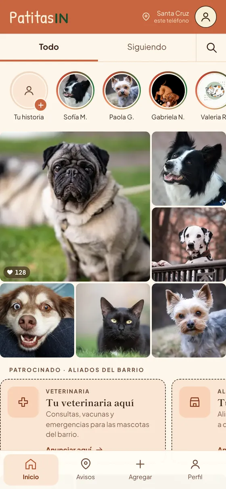
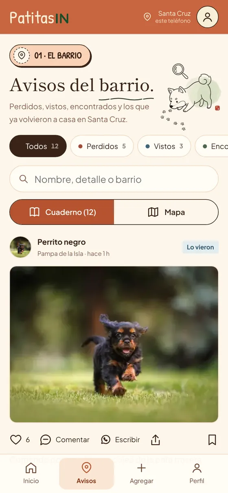
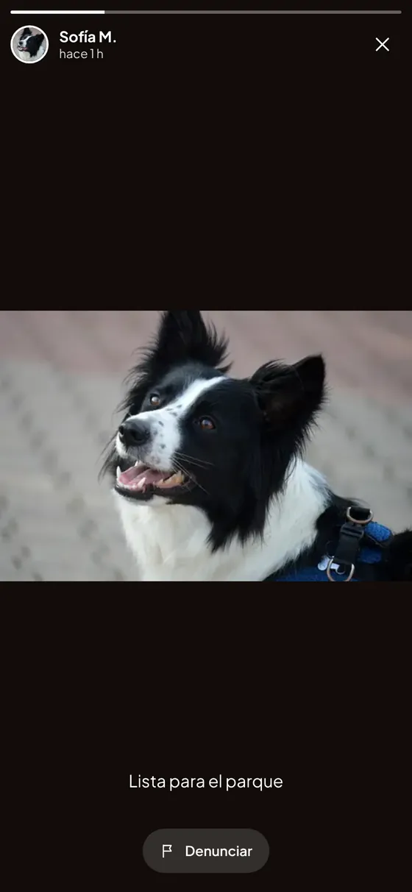
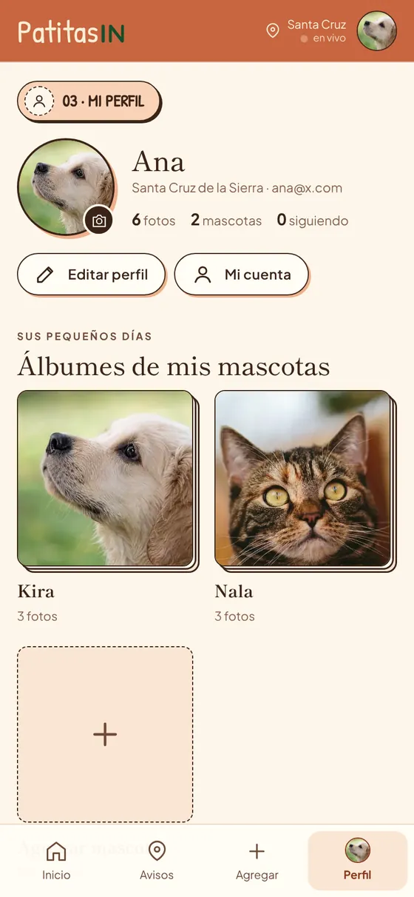

Cada patita cuenta.
PatitasIN es la app del barrio para encontrar mascotas perdidas y compartir el día a día de las tuyas. Avisos con mapa, fotos, historias y vecinos que ayudan.
Gratis · Para Android

Cuando una mascota se pierde, el barrio es el mejor buscador.
Las primeras horas son las más importantes. PatitasIN junta en un solo lugar los avisos, el mapa y a los vecinos que pueden ayudar a que vuelva a casa.
-
Publicas el aviso
Una foto, la zona donde se perdió o la viste y tu WhatsApp. Lleva un minuto y se puede hacer sin crear cuenta.
-
El barrio lo ve
Aparece en el cuaderno de avisos y en el mapa con su etiqueta: se perdió, lo vieron o lo encontraron. Si se perdió, también va arriba en Inicio.
-
Te escriben al instante
Quien la ve te escribe directo por WhatsApp, sin intermediarios. Cuando vuelve, el aviso pasa a «En casa».
Y mientras tanto, el barrio comparte fotos de sus mascotas.
Todo lo de tu mascota, en una sola app.
El cuaderno de avisos del barrio
Todas las mascotas perdidas, vistas y encontradas de Santa Cruz, en lista o en el mapa.
- Se perdió
- Lo vieron
- Encontrado
- En casa
- Mapa con la zona de cada aviso.
- Busca por nombre, detalle o barrio.
- «Cerca de mí» te ubica en el mapa para ver los avisos de tu zona, y tu ubicación no sale del teléfono.

La red social de las mascotas del barrio
Fotos de los vecinos y sus mascotas, para conocerse antes de que haga falta buscarse.
- Corazones, comentarios y #etiquetas.
- Mira «Todo» o solo las mascotas que sigues.
- Las mascotas que se buscan siempre aparecen arriba.
Historias de 24 horas
Un paseo, una siesta, una travesura. Se ven arriba en Inicio durante un día y después desaparecen.
- Súbelas con un toque desde tu foto.
- Quien las ve puede denunciarlas si algo no está bien.

Un álbum para cada mascota
Tu perfil guarda las fotos de cada una en su propio álbum, tus avisos y lo que guardaste para después.
- Si se pierde, publicas el aviso desde su ficha con su foto.
- Guarda avisos y fotos para verlos más tarde.

Un barrio que se cuida.
PatitasIN se pensó para ayudar sin exponer a nadie.
Ubicación aproximada
El punto de un aviso se guarda redondeado a unos 150 metros, nunca tu casa exacta.
Fotos sin datos ocultos
Antes de subirse, las fotos pierden el lugar donde se tomaron y los demás datos del archivo.
Denunciar y bloquear
Lo que no corresponde se denuncia con un toque, y puedes dejar de ver a quien lo publicó.
Consejos contra estafas
Nadie pide dinero por adelantado para devolver una mascota. Cada aviso te lo recuerda.
Reglas claras
Solo avisos reales y trato amable. Quien publica fotos tiene cuenta con correo confirmado.
Tus datos son tuyos
Borra tu cuenta cuando quieras desde la app: se va todo lo que publicaste, fotos incluidas.
¿Tienes una veterinaria o un negocio para mascotas?
En Inicio hay un espacio para los aliados del barrio, a la vista de los vecinos que tienen mascotas cerca de ti. Muy pronto vas a poder anunciar tu negocio en PatitasIN.
- Veterinarias
- Tiendas y alimento
- Peluquerías y paseadores
- Refugios y rescatistas
Lleva el barrio en tu bolsillo.
PatitasIN llega muy pronto a Google Play, gratis para Android.